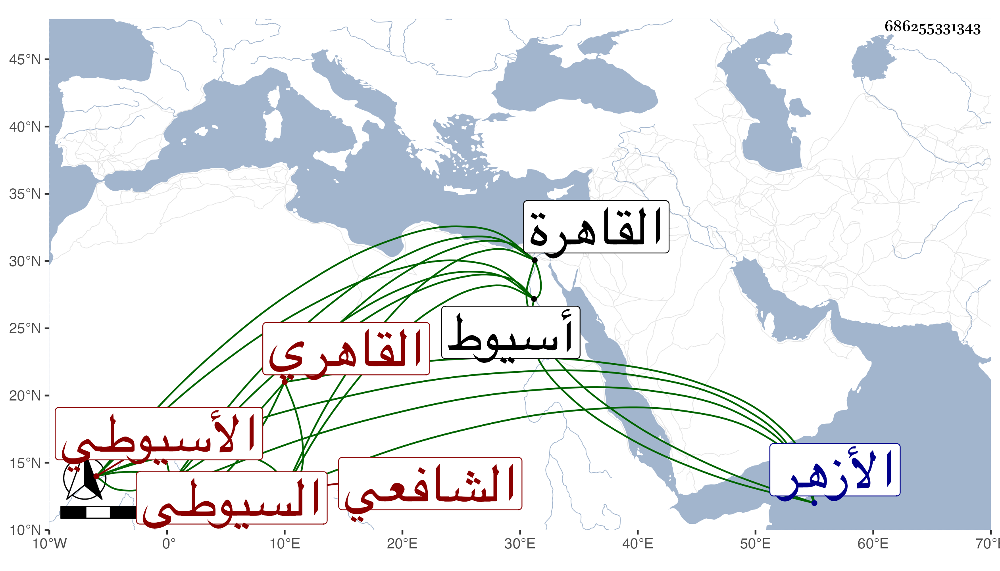

0902Sakhawi.DawLamic.ITO20230111-ara1.EIS1600.686255331343
Biography ID: 686255331343
300
أبو الحجاج الأسيوطي هو الجمال يوسف بن فلك الدين محمد بن يوسف السيوطي ثم القاهري الشافعي والد البدر محمد الماضي ويعرف هناك بابن قاضي الشرق وعندنا بكنيته . ولد في ليلة عيد الأضحى سنة اثنتين وعشرين وثمانمائة بأسيوط ومات له أخ اسمه سعد كان ممن اشتغل وأخذ عن القاياتي وغيره بالطاعون سنة ثلاث وثلاثين فقدم بعد لميراثه ثم عاد فحفظ القرآن والبهجة والألفية وغيرها ورجع إلى القاهرة فقطن الأزهر تحت نظر نور الدين الطيبي تلميذ الادمي وأحد فقهاء الأطباق فكان يسترفق به في ذلك بل وأخذ عنه في الفقه وغيره وتدرب به في الصناعة بل لازم الخواص في الفقه والفرائض والأصلين والنحو والعروض وغيرها وقرأ على المناوي والبلقيني غالب شرح البهجة ولازم الجوجري كثيرا وكتب على ابن الصائغ فأجاد وتكسب بالشهادة وتميز فيها وجلس بجامع الصالح مدة وناب في القضاء عن العلم البلقيني فمن بعده ثم كتب التوقيع بباب زكريا وحج في سنة ست وخمسين في البحر رفيقا لنا وسمع اليسير معنا وكذا جاور بعد ذلك سنتين متواليتين وسافر على قضاء الركب مرة بعد أخرى واختص بتمراز الدوادار الثاني وتكلم عنه في الأنظار وغيرها وكذا قربه بردبك الدوادار الثاني وزاد اختصاصه به وتكلم عنه أيضا مع توقع خلاف ذلك منه بخصوصه له وبالجملة فلم يذكر عنه إلا الخير مع بادرة وقوة نفس ولذا أهانه الأشرف قايتباي مرة بالفعل ثم بالقول وقبل ذلك أهانه تمربغا وغيره . مات في جمادى الأولى سنة ست وتسعين .
